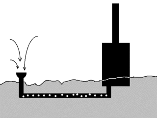

Получение воды из воздуха.
Берем железную бочку, красим в черный цвет и устанавливаем на огороде. К
бочке приделываем трубу, вроде печной. В нижней части к бочке подводится еще
одна труба, по-тоньше. Эта труба уложена под землей и выходит на поверхность
на некотором расстоянии. В самой трубе насверлены многочисленные отверстия.
Как оно работает читаем ниже.

Бочка с трубой, разогревшись от солнца разовьет тягу, вроде печки. Воздух
будет засасываться в тонкую трубу, проходить под землей, попадать в главный
резервуар и выбрасываться сверху через большую трубу. То есть возникнет
постоянная прокачка воздуха. Температура под землей ниже чем на поверхности.
Поэтому в тонкой трубе воздух будет терять влагу, которая осев на стенках
вытечет через отверстия в землю.
Таким образом мы добьемся орошения земли без полива. Пустим множество таких
труб под поверхностью огорода и земля на нем всегда будет влажной.
На практике эта штука не испытывалась. Теоретически, производительность
очень зависит от времени года (суток) влажности и пр. Интересно на самом деле
собрать такой агрегат и проверить. Дырки в нижней трубе лучше не сверлить, а
собирать воду в отдельной емкости. Будет сразу понятна эффективность. Да и
вообще, эту штутку можно использовать, скажем, для получения пресной воды там
где ее нет. Скажем в море. Охладитель - морская вода.
Назад|На главную